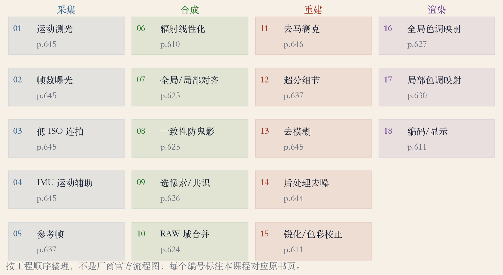
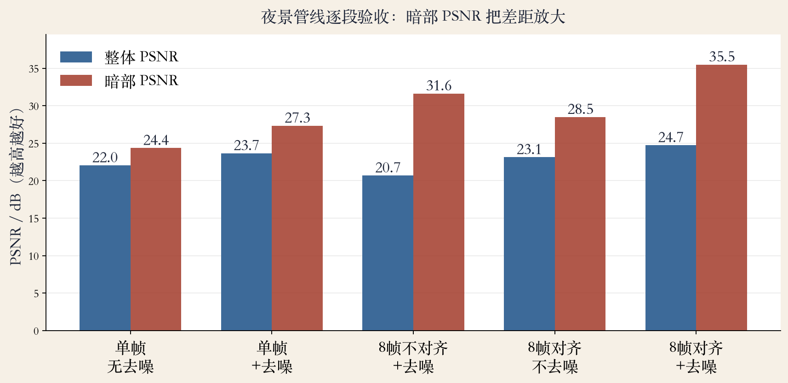
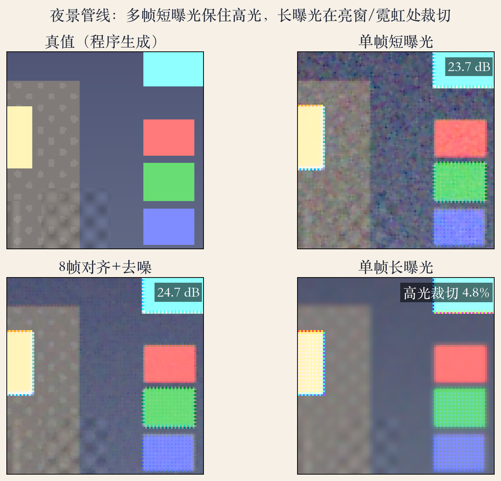

第 10 章应用综合 · 开场
夜景难在哪：两个矛盾
- 亮部太亮、暗部太暗，单张拍不全。
- 低光噪声接近信号，暗部尤其脏。
- 单张长曝光，高光先饱和。
- 单张短曝光，暗部全是噪点。
依据：原书第 620/645 页
两个矛盾
动态范围不够：亮暗差太大
暗部光子太少：噪声压不住
复盘图 · 十八步四阶段
十八道工序，分成四段
- 十八步是本课按工程顺序整理的。
- 四段：采集、合成、重建、渲染。
- 每一步都标了对应的原书页。
- 这不是厂商的官方流程图。
依据：原书第 623–646 页

十八步：采集/合成/重建/渲染，每步标原书页｜程序生成，未用教材或论文原图
采集 · 运动测光
采集：先决定拍几帧
- 低光用低 ISO 快速连拍。
- 多帧合并成一张降噪图。
- 运动测光定帧数和曝光时间。
- 先选参考帧，其余帧向它对。
依据：原书第 645/637 页
采集要点
低 ISO 连拍，缩短单帧曝光
对齐并合并不停运动的区域
陀螺仪等运动信息辅助估抖
对齐 · 配准
对齐：鬼影从这里来
- Ward 用全局参数变换对齐输入图。
- Kang 加上局部光流，做精确对齐。
- 融合辐亮度前要检查运动一致性。
- 差一个像素，亮边就出双层重影。
依据：原书第 625/637 页
两种对齐
三脚架：全局平移/旋转就够
手持：全局配准＋局部光流
对齐后再融合辐亮度
运动物体对不齐会变鬼影
合并 · 权重与共识拼接
合并：不是简单平均
- 每帧每个像素的可靠度不同。
- 过曝、欠曝、噪声大的样本降权。
- 两端衰减的帽子权重。
- 共识拼接先定一张无鬼影底图。
依据：原书第 623–626 页
顺序与做法
先对齐再合并，运动才不糊
先合并 RAW 再去马赛克
共识拼接再补高光和暗部
重建 · 去马赛克
去马赛克：绿色带队
- 去马赛克是超分的一个特例。
- Bayer 绿色传感器是红蓝的两倍。
- 做不好会出现伪彩和拉链纹。
- 多数方法用绿色梯度推断红蓝。
依据：原书第 646/611 页
夜景里的注意点
噪声大，伪彩比白天更明显
先合并再插值，样本更干净
ISP 还会锐化、白平衡、伽马
同源 · 一条观测链
同源：超分、去模糊、去噪
- 超分靠对齐并合并多张输入图。
- 去模糊和超分关系很近。
- 去模糊的核更大，而且未知。
- 它们和去马赛克共享观测模型。
依据：原书第 637/645/673 页
一条观测链
多帧亚像素对齐提供额外采样
合并抑制噪声
去模糊恢复被抖动的边缘
去马赛克补颜色
渲染 · 色调映射
色调映射：把 HDR 压回屏幕
- 全局传递曲线简单，但保不住宽曝光。
- 逐通道套 gamma 会让颜色变淡。
- 先取亮度通道再映射更好。
- 双边滤波保边，减少晕轮。
依据：原书第 627/630 页
夜景的高光与暗部
窗、灯、霓虹是高光
天空、巷子是暗部
局部映射参数重了会出黑边光晕
实验一 · 合成夜景
实验：整体 +1.07，暗部 +8.17 dB
- 八帧短曝光，加泊松噪声和读出噪声。
- 整体 PSNR 从 22.04 升到 24.73 dB。
- 暗部 PSNR 从 27.33 升到 35.50 dB。
- 八帧不对齐 20.68 dB，比单帧还差。
依据：本集实验

各阶段 PSNR：整体 22.0→24.7 dB，暗部 27.3→35.5 dB｜程序生成，未用教材或论文原图
实验二 · 长曝光与帧数
长曝光 vs 短连拍
- 长曝光八倍，4.8% 的像素饱和。
- 八帧短曝光对齐合并，饱和 0.0%。
- 帧数 1→8，PSNR 22.04→23.13 dB。
- 暗部噪声 0.0414→0.0205，约减半。
依据：本集实验

真值/单帧/长曝光；裁切 4.8% vs 0.0%｜程序生成，未用教材或论文原图
工程复盘 · 失败边界
失败边界：每道都有代价
- 对齐错：亮边双层、运动鬼影。
- 长曝光：高光裁切救不回。
- 去马赛克差：伪彩和拉链纹。
- 降噪过头：皮肤砖墙变塑料。
依据：原书第 625/646 页
输出前检查
高光边缘与暗部平场
运动物体与细纹理
滚动快门、暗角、色差、频闪
取证场景保留原始 RAW 和参数
收束 · 下一集
夜景收束：一条管线
- 夜景模式是一条多帧管线。
- 多帧降噪的前提是对齐正确。
- 整体、暗部、高光、纹理分开看。
- 下一集：第 10 章复盘。
依据：本集实验；原书第 620–673 页
按症状排查
暗部脏：看采集和合并
边缘重影：看对齐和鬼影
颜色花：看去马赛克和色度降噪
高光死白：看曝光和色调映射